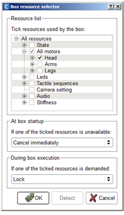

NAOqi Core - Overview | API | Tutorial
ALResourceManager offers a safe way to manage resources. A resource can be: an exclusive use of motor, microphone, LEDs, CPU, stiffness parameter, camera settings, a ball...
ALResourceManager allows you to:
If you create and run only one behavior, your behavior, you probably won’t need a resource management. You know exactly when you need resources and can manage it in a state machine for example. If you merge behaviors from different creators you may need to reserve resources that another behavior can also use.
To see all resources and the corresponding owner, use Choregraphe and launch the Resource viewer panel.
Taking a parent resource automatically takes all child resources.
Suppose you create a behavior to play football. NAO first search the ball without moving. If NAO finds the ball and walk, you want to be sure that resources are available before walking.
Resource manager allows taking a resource in a root object or root behavior, all child objects will automatically take the resource to parent but child can enter in conflict each others.
Resource manager can’t deadlock because all behaviors that request resource use a timeout.
Resource manager informs conflict without resolving the conflict, the operation takes no-cpu. The behavior is notified and decides to reject demand or release resources.
Low level function call won’t reserve resource and will use their own and specific hidden resource management (a simple mutex most of the time). If you want to manage resource (probably share behaviors), before calling a method, you’ll need to reserve resources you need and release them after call.
You can reserve both head motors, text to speech and LEDs to be sure to synchronize movements, speech and LEDs.
The group of resources is managed exactly as one resource:
Performances
The resource manager is free CPU.
Limitations
Resource allocation is explicit. If you want to resource manage a method, you need to make an explicit call to resource manager.
The easiest way to edit the resources of a box is to right click the box and choose Edit resources.
For further details, see: Box resource selector.
To understand the interaction between boxes, see the Tutorial about the resource manager.
You can also play a box and check the taken resources using the Resource viewer panel.
# create proxy on resource manager
proxy = ALProxy("ALResourceManager","localhost",9559)
#createResource in root (parent resource is "")
proxy.createResource("newResource","")
#check resource is free
free = proxy.areResourcesFree(["newResource"])
# take resource
# waitForResource(resource name, owner name, callback to notify you that someone want the resource, timeout)
proxy.waitForResource("newResource", "newOwner", "callback", 1)
#release resource
proxy.releaseResource("newResource", "newOwner")